September Num - Written by Stephanie Therese Fajardo
NAME OF THE ESSAY
Table of Contents:
-
Jaren & Cess Special Buko Pie 1
(A reflection on heritage, identity, and nostalgia as the author navigates her relationship with the Philippines.)
-
How to Look Like a Prostitute 2
(A commentary on being a Filipina in a world filled with prejudice, sexism, and colonial gaze.)
-
Katipunan Avenue 3
(A tribute to the bustling life and layered history of Katipunan, where youth, progress, and tradition meet.)
-
Of Intestines and Heartstrings 4
(A heartfelt essay on family, food, and the love that binds us, through the lens of the author’s bond with her young cousin.)
-
In Defense of Gambling 5
(A nuanced exploration of Filipino funerary traditions, where gambling plays a role in collective grief and healing.)
-
The Hill 6
(A reflection on elitism, privilege, and the social divides the author grapples with as a student in Ateneo.)
-
Jea 7
(A touching portrayal of friendship, sacrifice, and the complex and toxic roles of being the eldest in a Filipino family.)
Jaren & Cess Special Buko Pie
The bus to Binondo shudders to life, diesel fumes mingling with the perfume of a dozen passengers. I'm wedged between Emma and Maria on the worn, sticky vinyl of the back row. Their eyes, wide as saucers, drink in every detail of this alien landscape—a Manila they've only known through their parents' wistful stories and grainy photo albums. They bombard me with questions about the blur of jeepneys painted like psychedelic roosters, about the tangle of electrical wires that loop between buildings.
I should know the answers. I'm Filipino, born and raised in the heart of this concrete jungle. But the names—Mandaluyong, Parañaque, Pasay—slip past like strangers, vaguely familiar but ultimately unknown.
"I'm just terrible with directions," I lie, flashing an apologetic smile.
The truth sits heavy in my chest, as stifling as the midday heat: I'm as lost as they are in the country I call home.
A woman boards, her thin frame belying the strength it takes to balance stacks of mint-green boxes. Wisps of gray hair escape her faded floral bandana, and her eyes crinkle with well-worn smile lines. "Jaren & Cess Special Buko Pie!" she calls, her voice rising and falling like a street vendor's song above the growl of the engine and the tinny K-pop leaking from someone's earbuds.
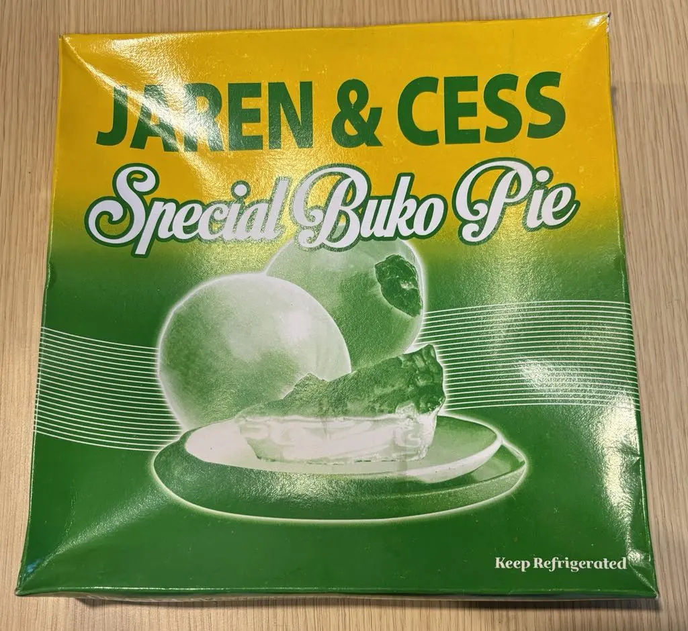"180 nalang po," she says, her gaze locking with mine. "First sale of the day, ma'am. Wala pa akong benta." Before I can analyze it, the box is in my hands, warm and slightly greasy. My fingers curl around it instinctively, muscle memory from a life I thought I'd neatly packed away.
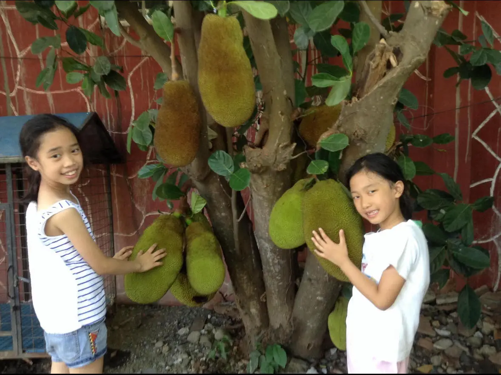(Stefi and her sister, Iya, standing by lola’s Jackfruit tree in the province)
I take a bite and I'm seven again, small legs swinging as we bounce along endless highways toward Lola's house in Northern Luzon. The pie's creamy sweetness mingles with salt air whipping through open windows, my hands sticky with coconut filling.
"This used to be my favorite," I murmured to Emma. The words feel thick in my throat, coated with nostalgia and something dangerously close to shame.
My world now is a bubble of privilege—sleek cars with windows tinted against the chaos outside, a silent driver who knows my destinations without a word. School uniform means Everest School; crop top and platforms signal a night in BGC. I float above Manila in climate-controlled cocoons, swiping through TikTok, never really seeing the city teeming with life below.
How long has it been since I last rode a bus, feeling the press of bodies and the jolt of potholes? Since I spoke to a street vendor, their callused hands brushing mine in the exchange of bills? My parents worked so hard to lift me from the world of long bus rides and roadside snacks. But sitting here, surrounded by the heartbeat of everyday Manila, I wonder what I've lost in the ascent.
Emma and Maria chatter excitedly about their plans to explore, to immerse themselves in their heritage. I nod and smile, playing the role of the knowledgeable local guide. My responses are vague, cobbled together from dim memories and things I've overheard.
(Emma and Maria drinking palamig)
It's a strange feeling, being less familiar with Manila's daily rhythms than these first-time visitors. They speak of jeepney routes and wet markets with an excitement I haven't felt in years. I find myself wishing I could see the Philippines through their eyes, free from the jaded familiarity that's settled over me.
As we step off the bus, the clamor of Binondo envelops us. Emma and Maria plunge ahead. I linger for a moment, the empty pie box still in my hand. The sweetness of coconut clings to my teeth, mixing with the tang of my own unease. I drop the box into an overflowing bin, watching it disappear among candy wrappers and discarded lottery tickets. My friends have already vanished into the crowd. I take a deep breath and step forward, unsure of where I'm going but knowing I can't stand still.
How to Look Like a Prostitute
I suggest venturing out when the night is rife with possibility. The air should crackle with neon and expectations, a heady mix of local pride and foreign curiosity. This will be the perfect backdrop for when inevitably, someone mistakes your existence for an invitation.
Bring a friend, if you can. There's strength in numbers, after all. Perhaps you're the morena to her chinita, or you both sport the flat noses of your parents. As you walk, heads together in laughter, notice how some eyes follow. Your joy is magnetic, but not always for the right reasons.
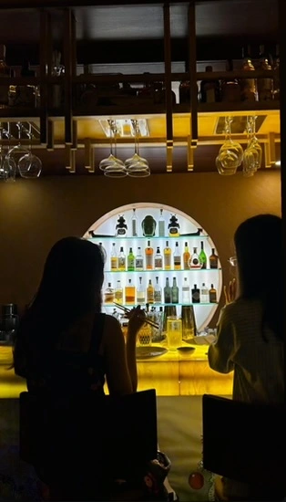(Stefi and her best friend Anya drinking and dining in La Japonesa, Poblacion)
Before you step onto the pulsing streets, take stock of your armor. Designer label or thrift store find, it matters little. In some eyes, your bronze skin and silky black hair are the only costume that counts. This is your cue to retreat if needed. But don't fret. Take a steadying breath and remember your worth.
Soon enough, though, it will feel personal. You'll be standing outside a high-end resto-bar, discussing philosophy or nuclear physics or whatever brilliant thoughts occupy your mind. But someone will sidle up, eyes glazed with liquid courage, and ask if he can “inquire.”
He'll slur his words and the stench of beer will cling to each syllable. The absence of a white beard won’t diminish his unsettling Santa-on-vacation look. His pale, sunburnt skin will be an angry shade of pink, peeling at the nose and shoulders. He’ll be the Ghost of Colonial Past, haunting Poblacion in flip-flops and cargo shorts. And you'll want to scream, to hide, to tear down centuries of subjugation with your bare hands.
But you don't. Just catch your friend's eye. That shared glance of disgust will speak volumes. Simply turn away, letting your revulsion and dismissal hang in the air. He’ll linger, as if waiting for you to change your mind, to suddenly realize the opportunity you're missing. When it's clear you won't engage, he’ll shrug and mutter something about "your loss" before swaggering off to his next target. It's not revolutionary. It's not world-changing. It's just how you survive another night out.
The encounter will leave you seething and your fists clenching. You'll begin to question why you even came to Poblacion. What were you thinking? A string of curses will want to spill from your lips, but then your eyes will meet your friend's. You'll catch a glimpse of shared frustration, of solidarity, and you'll stop.
Don't expect to change the world tonight. It's not about schooling every leering foreigner. And it's not even about dismantling centuries of fetishization. (Your safety isn't worth risking. Unless, of course, you've got a squad of bodyguards or a black belt in judo.) It's about existing unapologetically as a Filipino woman in a world where many still see you as a commodity.
From Makati to Malate, BGC to Poblacion, it's an all-to-familiar script – another drunken "How much?" on a street corner, a look of surprise at your perfect English, a "compliment" that leaves you feeling small. If these are the hoops we jump through just to have a night out, you might as well clink glasses and toast—To friendship and good, strong boundaries! To this awful moment, and to the wonderful women who stand tall despite it all. To Filipinas navigating a world that desires and dismisses us. How exhausting, how infuriating, how brilliantly, defiantly Filipina we are.
Compose yourself. The night is still young. You're almost through this. The streets of Poblacion are yours to reclaim. Walk with your friend, then maybe find more allies. Turn up your laughter all the way and avoid the temptation to shrink yourself. Keep your chin up and check on your surroundings from time to time. Be cognizant; show up for yourself.
You will stand fiercely. Strong, vibrant, beautiful. You are the daughter of a thousand generations of Filipino resilience. The blood of warriors and poets flows through your veins. The gentle curve of your cheekbones and the fullness of your lips speak of a resilience forged in monsoons and revolutions. In the foreigner’s eyes, this is all it takes to look like a prostitute.
By morning, this man will likely forget you existed. His preconceptions might totally overshadow the moment of being rebuffed, except for a small crack in his worldview. It's okay. What matters is that you stood your ground.
Let them gawk. Let them assume. You are not here to satisfy their curiosity or fulfill their fetishes. You are here because this is your city, your country, your home. And you will love your earthy skin and stubby nose because no sunburnt, cargo-shorts-wearing, Filipina-dream-girl-fantasy-having, white man can ever love these relics as truly as you can.
Katipunan Avenue
The sun crawls over Katipunan Avenue, painting the concrete in shades of amber and rust. Named for the revolutionary society that once whispered of independence in these very streets, Katipunan today hosts a different kind of revolution – one of youth, knowledge, and relentless forward motion.
At dawn, the avenue stirs to life as vendors unfurl tarps and arrange their wares with practiced efficiency. The aroma of warm pandesal drifts from bakeries, soon overpowered by the bite of jeepney exhaust. On the iconic footbridge spanning the divide between Ateneo and Miriam College, early risers feel the subtle tremor of the city awakening beneath their feet.
As morning unfolds, Katipunan transforms into a river of humanity. Students stream from crowded dormitories in Esteban Abada and Xavierville, their backpacks laden with textbooks and ambition. They weave between hurried professionals clutching coffee cups from local haunts like talismans against the day ahead. In tiny carinderia eateries tucked away in side streets, friends huddle over plates of fishball and kwek kwek, their laughter a counterpoint to crackling of oil and the clamor of passersby.


(Filipino Street Food in UP)
The avenue wears its history in layers. Spanish colonial architecture peeks out from behind modern storefronts, while ancient acacia trees stand sentinel over new high-rises. In the quiet corners of secondhand bookshops, the musty scent of well-thumbed pages tells stories of generations of students who've passed through these doors, searching for knowledge or escape.
As afternoon wanes, Katipunan shifts again. Cram schools disgorge weary students into milk tea shops where they debate politics and gossip in equal measure. The aroma of sizzling street food from Rodic’s Diner tempts passersby, while inside upscale restaurants, families celebrate milestones over crisp white tablecloths.
Night falls, but Katipunan never truly sleeps. Neon signs of 24-hour fast food chains flicker to life, painting the darkness in electric hues. In 7-Eleven and Ministop convenience stores, bleary-eyed students fuel late-night study sessions with instant coffee and determination. Pop Up's container vans hum with activity while other teens trade in textbooks for cheap booze. Outside, taxi drivers swap stories at sidewalk canteens near Aurora Boulevard, their radios a soft backdrop to the city's nocturnal rhythms.
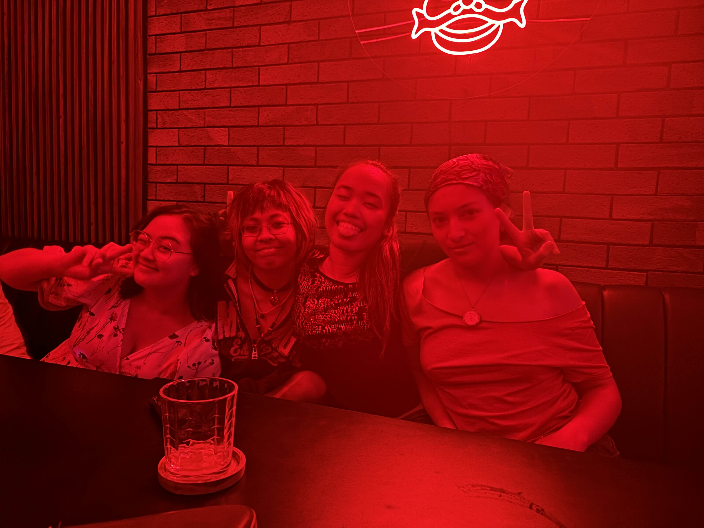(Night out in a Karaoke Bar in Katipunan with Emma, Marie, and Chess)
But Katipunan is more than just a sum of its parts. It's a shared experience, a collective heartbeat. It's in the way strangers instinctively bunch together under a store awning during a sudden downpour. It's in the silent camaraderie of commuters on a packed jeepney, swaying in unison as the driver navigates rush hour traffic. It's in the pride that swells in a parent's chest as they watch their child don a graduation gown, years of sacrifice crystallized in a single moment.
For those who know it, Katipunan is not just an avenue – it's a rite of passage. It's where young adults first taste independence, where lifelong friendships are forged over late-night study sessions and shared dreams. It's where the heady optimism of youth collides with the harsh realities of the world beyond campus gates.
Katipunan teaches that vitality isn't found in perfection, but in persistence. It's etched in the face of the vendor who sets up her stall every dawn, rain or shine. It's in the determined stride of the student rushing to make a deadline, fueled by nothing but willpower and instant noodles. It's in the endless cycle of buildings torn down and rebuilt, each iteration a testament to the avenue's refusal to stagnate.
Katipunan doesn't romanticize its struggles. It wears them openly, like the potholes that pockmark its streets or the faded election posters that cling stubbornly to lampposts. Yet in this imperfection lies its strength. Each morning, as students crowd the footbridge and vendors reclaim their corners, Katipunan rewrites itself. It's not always pretty, rarely efficient, but undeniably tenacious. Katipunan offers something rare: the space to try, fail, and try again. In its constant flux, its refusal to be defined or contained, Katipunan embodies the messy, vital process of becoming.
Of Intestines and Heartstrings
The scent of grilling meat wafts through the humid Manila air, catapulting me back to the languid summers of my childhood. I stand before a street vendor's cart, its yellow paint chipped and faded, watching as she tends to skewers of orange meat sizzling over hot coals. This isn't just any meat—it's Isaw, chicken intestines threaded onto thin wooden sticks, a Filipino delicacy that never fails to furrow the brows of my American friends.
Beside me, practically vibrating with excitement, is my seven-year-old cousin Kaela. Her deep brown eyes, wide and eager, reflect the flickering flames of the grill. Her short, unruly hair frames a face that's all cheeks. But it's her smile that catches my attention—a gap-toothed grin that lights up her entire face, despite the absence of her two front teeth.
"Ate Stef," she tugs at my sleeve, her voice a mix of hope and barely contained enthusiasm, "can we get ten pieces?"
I feel a lump in my throat. Ten pieces is excessive, probably more than her small frame needs. But I see the hopeful glint in her eyes, the way her fingers anxiously twist the hem of her t-shirt.
"Let's get some extra," I say, ruffling her hair. "In case you get hungry later."
As we wait for our Isaw, I reflect on the journey that brought us here. Kaela's story began on a fateful Valentine's night—a Tinder match that led to a one-night stand. Her father remains a faceless stranger, while her mother, my Tita Bam, battles the demons of drug addiction.
From the moment of her birth, Kaela has weathered a storm of abandonment. Tita Bam's erratic behavior—disappearing on drug-fueled escapades or fruitless searches for her own biological parents—left Kaela in a constant state of uncertainty. The wounds deepened when Tita Bam moved to Bacolod, a distant province, in a misguided attempt at recovery. Instead, she fell into old patterns, had another child, and through neglect, lost that baby before its first birthday.
Kaela, barely five at the time, mourned a sister she had only known through fleeting phone calls. Now, Kaela's makeshift family consists of Tita Mara, an aunt whose obesity has almost rendered her immobile, and Yaya Mai Mai, a maid whose presence depends on the timely payment of her salary. It's a fragile construct, held together by necessity and circumstance.
Lost in these thoughts, I'm jolted back to the present as the vendor smiles, revealing a gold tooth, and hands over our order. Fifteen pieces of Isaw, glistening with oil and char. As we walk back to Kaela's apartment, I'm struck by Kaela's boundless energy. Despite the late hour and the oppressive heat, she skips ahead, her flip-flops slapping against the uneven pavement. She turns back to me, "Hurry, Ate Stef! Before it gets cold!"
Inside the apartment, the reality of Kaela's life hits me anew. The space is small, cluttered with the detritus of lives lived on the margins. A single bed dominates one corner, where Tita Mara, Kaela's aunt, spends her days. Kaela, seemingly oblivious to the squalor, immediately clears a space on the cluttered coffee table. I watch as she carefully wipes down the surface with the cleanest part of her shirt, her small face scrunched in concentration. I lay out our feast: the Isaw, a small container of spiced vinegar for dipping, and two bottles of Sarsi, a Filipino sarsaparilla soda that I've sorely missed.
As we settle onto the worn couch, its springs protesting under our weight, Kaela pulls out a crumpled piece of paper from her pocket. "I made a list," she announces proudly, smoothing out the creases. "Plans for our sleepover."
I lean in to read her childish scrawl:
- Isaw
- Dress to emprres
- Hugs
- Movie horror
- Walk around circolo verde
- Call Chris <3 (Ate Stef's boyfriend)
The simplicity of the list breaks my heart. These small joys, things that any child should take for granted, are precious rarities in Kaela's world. Yet her face shines with anticipation.
 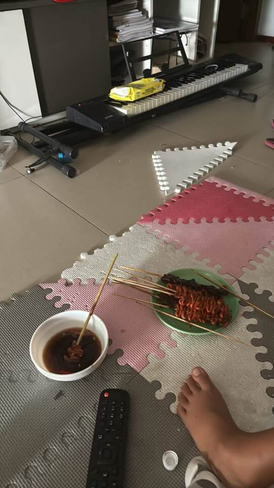
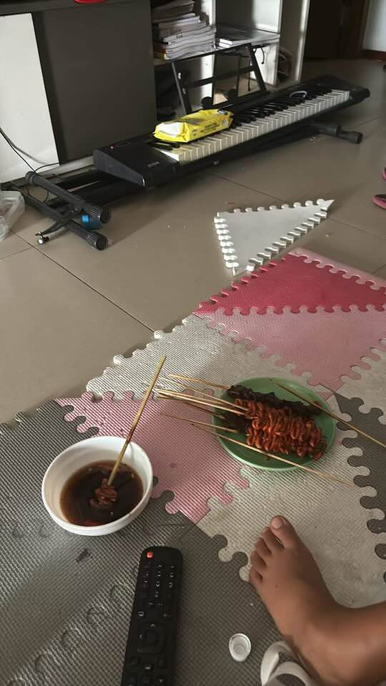
(Kaela eating Isaw in UP)
As we start on our Isaw, savoring the unique texture and smoky flavor, Kaela's quick mind is already racing ahead. "Ate Stef," she asks between bites, her tone serious despite the smear of sauce on her chin, "do people in America eat Isaw too?"
I chuckle softly, caught off guard by her question. "Not really," I admit. "Some people there might think it's strange."
Kaela's brow furrows, her expressive face scrunching in confusion. "But it's so good! Why wouldn't they like it?"
Her question is innocent, but it touches on something deeper—the challenge of straddling two cultures, of loving things that others might not understand.
"Sometimes," I begin slowly, choosing my words carefully, "people are scared of things that are different or unfamiliar. But that's okay. It doesn't make Isaw any less delicious or special. It just means we get to enjoy it all ourselves."
Kaela seems to mull this over as she chews thoughtfully on her Isaw. "I think," she says finally, her tone matter-of-fact, "that people in America are missing out."
I can't help but laugh at her declaration, even as my heart aches. Because Kaela is right—not just about Isaw, but about so much more. The people in my American life are missing out on knowing this extraordinary child, with her quick wit and indomitable spirit.
As the night wears on, we work our way through Kaela's list. We watch a mildly scary movie, with Kaela burrowing into my side during the tense parts, her small body tense with a mix of fear and excitement. We play dress-up with some of my old clothes that I've left behind, Kaela's eyes shining as she tries to walk in heels that are far too big for her. We take a short walk in the nearby park.

(Kaela in her all cheetah print outfit styled by me)
Through it all, I find myself acutely aware of the precariousness of Kaela's situation. Kaela doesn't talk about her mother's absence often, but I see it in the way her eyes dart to the door whenever footsteps pass in the hallway, in the way she clings to me a little tighter than necessary. Her resilience is remarkable, but it's born of necessity—a child forced to grow up far too quickly.
As the night draws to a close, Kaela yawns widely, her eyelids growing heavy. But before she drifts off to sleep, she looks up at me, her expression suddenly vulnerable.
"Ate Stef," she whispers, her voice small in the quiet room, "when will you visit again?"
The question catches in my throat. I think of my life in America—the classes, the part-time job, the countless commitments that fill my days. I think of the cost of plane tickets, of the vacation days I don't have. And I think of Kaela, alone in this apartment with only an bedridden aunt and an underpaid maid for company.
"Soon," I promise, the word tasting like ash in my mouth. "As soon as I can."
Kaela nods, seemingly satisfied with this vague assurance. She snuggles closer, her small body fitting perfectly against my side. Within minutes, her breathing evens out as she slips into sleep.
But I remain awake, my mind a whirlwind of thoughts. I think of the life I'm building in America—the opportunities, the challenges, the constant navigation between two cultures. And I think of Kaela, of the battles she faces here in the Philippines, battles that make my struggles seem insignificant in comparison.

(Kaela and I at dinner a day before I leave for America)
I can't change the circumstances of Kaela's birth or erase the hardships she's already faced. I can't guarantee her a future free from the cycles of poverty and addiction that have shaped her young life. But I can be here, in this moment and in moments to come. I can share Isaw and scary movies, offer hugs and understanding and a glimpse into a world beyond these apartment walls.
Soon, I'll return to my life in America, to term papers and part-time jobs and the ongoing challenge of carving out my place in a country that still sometimes feels foreign. As sleep finally claims me, I'm grateful for this night, for this meal, for this child who loves with her whole heart despite every reason not to. I'm grateful for love. I’m grateful for family. I’m grateful for the healing that can be found in the most unexpected and “unpalatable” of places—skewered on a stick, charred and smoky intestines.
In Defense of Gambling
I was nine, at my grandfather’s funeral, when I learned how to gamble.
In the dimly lit chapel, my sisters and I found ourselves peering through mist-covered windows, captivated by the scene unfolding on the streetside. There, beneath the muted glow of street lamps, stood a rickety card table adorned with a floral-patterned tablecloth. Candles placed in repurposed mason jars cast uneven shadows on the weathered cards.
“Pay up!” my aunt hellishly exclaimed as she slammed her royal flush onto the tabletop. My young mind reeled as I grasped what was unfolding before me – my relatives, eyes gleaming with mischief and concentration, were engrossed in a lively game of pusoy dos, Filipino poker. Here, in the place where Lolo lay in eternal repose, my family seemed to be wagering with irreverent abandon. How could they engage in such frivolity at a time like this? Confusion and a touch of indignation welled up inside me. My heart, heavy with loss, struggled to reconcile this apparent celebration with the gravity of Lolo's death.
"It's tradition," my mother gently explained. She spoke of paglalamay, a nine-day vigil where people come together to honor the death of a loved one. Yet, at nine years old, the clamor of mahjong tiles and raucous cheers seemed inappropriate. My young mind conjured images of funerals bathed in monochromatic solemnity: mourners draped in black, heads bowed in silent reverence; the mournful timbre of organ music floating through hushed halls; eulogies delivered in whispers, as if speaking too loudly might disturb the departed.
There is no place for gambling in this type of setting – especially not the kind of gambling that the rest of the world knows, that of smoke-filled back rooms or glitzy Vegas casinos. Gambling, in my understanding, was a vice, a devilish dance with fate driven by greed and desperation.
How then, could these two worlds possibly intersect? Unbeknownst to my younger self, the roots of this tradition can actually be traced back to the late sixteenth century, when the archipelago’s proximity to East Asia facilitated the influx of Chinese immigrants engaging in business and trade. Games like mahjong, mooncake dice, and pai gow were commonplace in Chinese settlements. And as their interactions with natives increased, gaming practices dispersed into local culture. During this period, many of the Chinese intermarried with Filipinos, giving rise to the mestizo class that further accelerated the integration of Chinese customs. Over time, cards, tiles, and bets made their way into fiestas, reunions, and all sorts of gatherings nationwide.
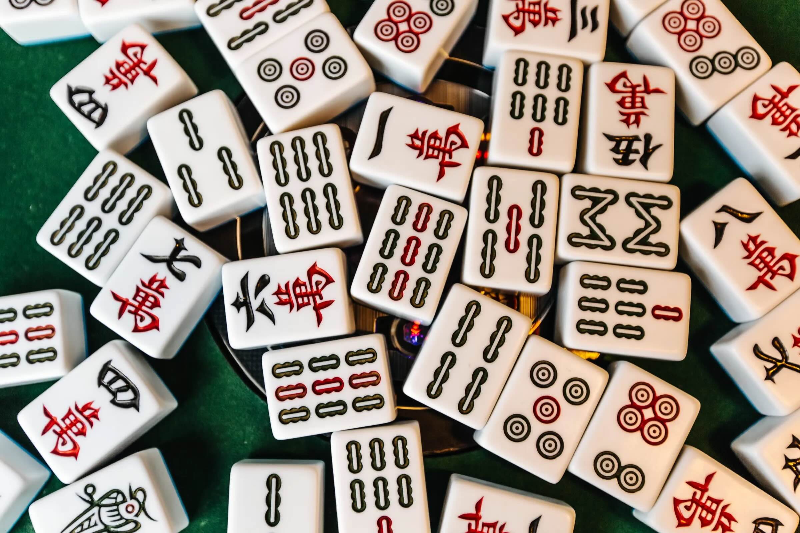(Mahjong tiles)
This integration, however, was not without its challenges. By the 20th century, concerns about the darker side of gambling—organized crime, addiction, and decreased productivity—led church leaders and lawmakers to enact restrictions. These objectives centered on prolific gambling, however, do not necessarily apply to the casual card and tile games played during wakes. Not all types of gambling are socially or morally equivalent. Activities like illegal cockfighting or unregulated sports wagering carry legitimate concerns about exploitation and abuse unlike the small-stakes matches at the funerals. The priority here is not individual benefit but collective solidarity and healing. They are not designed to cultivate addiction for monetary gain, nor do they carry the threat of enabling criminal enterprise. The betting takes place in the context of a ritual, where entertainment need not compete with productive work.
Thus, a Filipino funeral pulsates with life. At Lolo’s wake, the clatter of coins sliced through novenas. Laughter erupted from clusters of family members reminiscing over plates loaded with pancit and lumpia. 90s love songs by Eraserheads and Rivermaya blared from the speakers, inspiring off-key crooning from tipsy titos and teary-eyed titas. Kids chased one another between pews, working around elders engrossed in animated kwentuhan. The gloomy mood I expected lay shattered beneath tables laden with a feast more suited to a fiesta – trays of dinuguan and sweet treats sat alongside bottles of neon-colored sodas.
This lively approach to death in Filipino culture extends beyond the bounds of immediate family. The circle of mourners often widens to include acquaintances, colleagues, and even friends of friends. I recently attended the wake of a stranger—my mother’s coworker’s mother—where my father explained that visitors usually gift their winnings to the grieving family. Suddenly, what first seemed inappropriate came into focus as a tradition deeply rooted in meaning.
This custom, like many others, is shaped by the harsh economic realities of our developing nation. With scarce disposable income and minimal government assistance, major expenses like funerals can present nearly insurmountable economic hurdles, especially when you're expected to serve food and entertain guests for days on end. And when every peso counts, pragmatism prevails – you learn to lean on your community and social and economic realms intersect.
Yet, growing up in a land marked by colonization often means internalizing notions that brand such traditions as inferior or uncivilized. Centuries of Spanish and American occupation inculcated a sense of shame, teaching us to view our customs through a Western lens. It wasn't until I returned home after years abroad that I began to recognize and challenge this deeply ingrained bias.
I've now been to around twenty funerals in my lifetime and I've come to appreciate how these gatherings serve as a microcosm of Filipino society. They showcase our resilience and our unwavering commitment to those that we love. They stand as sophisticated responses to complex social and economic realities, finely tuned to the needs of a people who understand that no one should face life's greatest challenges alone.
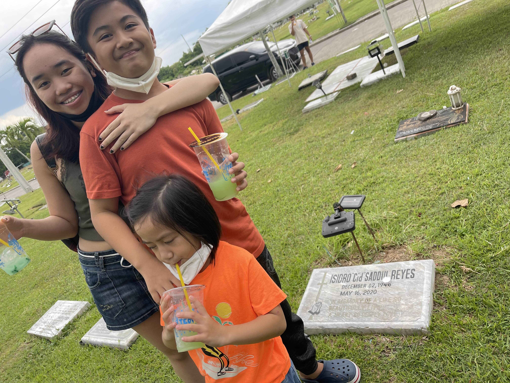(Miggy, Miro, and Stefi at lolo’s grave)
There is no set formula for processing loss, no single thread can stitch up the rip left by absence. For some, gambling during paglalamay provides connection and comfort. Others privately find consolation in thoughtful introspection. Many navigate a space in between. All I’m saying is, let’s make room for life's contradictions. Joy and sorrow, laughter and tears, life and death all give shape to one another. The Filipino wake asks for our willingness to approach the incomprehensible with open hands and hearts. And where some perceive dissonance, there may yet be a deeper harmony awaiting those who are willing to listen.
The Hill
"We stand on a hill," proclaims the first line of Ateneo de Manila University's school anthem. My father, an Ateneo alumnus, often recites this line with a mixture of bitterness and regret, telling me, "You do not stand on a hill; you start and crawl from the bottom of it."
I found myself confronting Ateneo’s legacy of elitism during a car ride with Jammy, a fellow student who embodied everything my father despised about Ateneo culture. Jammy, with his perfectly pressed clothing and that distinct Atenean accent that screamed of private school pedigree, was holding court in our jeepney car.
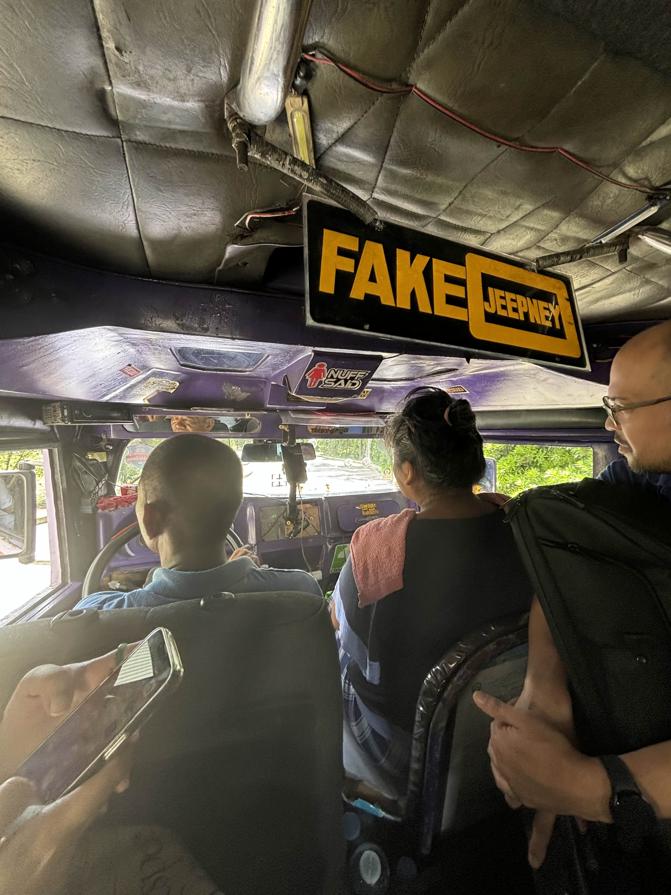(Jeepney ride to UP)
"You know," Jammy began, his voice dripping with unearned confidence, "Ateneo is ranked first in the Philippines. UP is second, of course." He paused, letting his words sink in as if waiting for applause. "It's not just about academics, though. It's about connections...'"
I felt my jaw clench as Jammy continued speaking. He began boasting about his summer internship at his uncle's law firm, emphasizing how many of the partners were Ateneans. It was clear he was oblivious to the discomfort his words were causing to those around him, particularly those of us who didn't share his background. Everything he mentioned seemed carefully chosen to hammer home the point that Ateneo wasn't just a school, it was a pipeline to power, a network that spanned the highest echelons of Philippine society.
Jammy's obsession with university rankings and his constant need to assert Ateneo's superiority was a living reminder of the classmates who had made my father feel inferior throughout his high school years. Every anecdote about influential alumni, every casual mention of family connections, every implied "us vs. them" sentiment – it all served to draw a line between those who belonged on the hill and those who didn't.
As Jammy droned on about Ateneo being first and UP second in some arbitrary ranking system, I felt my father's long-suppressed anger rising within me. That was the final straw. The casual entitlement, the unquestioned assumption of superiority, the blatant disregard for merit beyond a school name – it all came to a head.
"UP is better," I proclaimed, not out of genuine belief in UP's superiority, but as a challenge to Jammy's worldview. My words were a defense mechanism, a way to push back against the elitism that had wounded my father so deeply. In that moment, I wasn't just speaking for myself; I was speaking for the teenage version of my dad who never had the chance to stand up to his privileged peers.
His response dripped with patronizing amusement. He couldn't fathom how anyone could seriously consider UP to be better than Ateneo. According to his view, UP was a decent alternative for those who couldn't afford Ateneo's tuition, but the idea that it could be superior was, to him, laughable. His attitude made it clear that in his mind, there was no real comparison between the two institutions.
My father's experience at Ateneo was one of constant alienation. He didn't have the right accent, the right clothes, or the right family name. Every day was a reminder that he was an outsider looking in, trying desperately to belong in a world that wasn't built for people like him. The pressure to conform, to hide his humble origins, weighed heavily on him. It wasn't just about academics; it was about surviving in a social ecosystem that valued pedigree over personal growth.
Despite my own achievements, Jammy's attitude continued to infuriate me throughout the entire jeepney ride. It wasn't about feeling threatened; my classmates and I had our own accomplishments to be proud of. Rather, it was about recognizing the systemic inequalities that persist in education and society. Jammy's behavior was a reminder that the elitism my father experienced decades ago still thrives in certain circles. The Atenean brand dismisses and devalues anyone outside its narrow definition of worth.
The irony of the situation wasn't lost on me. Here I was, a product of the very privileges my father lacked, using my status to challenge someone like Jammy. My father had given me the fighting chance he never had, equipping me with the education, opportunities, and confidence to stand toe-to-toe with those who might look down on others. It was a bittersweet realization – my ability to confront this elitism was itself a product of the social mobility my father had worked so hard to achieve.
Ateneo's chosen representatives, like Jammy, signal that at its core, the institution hasn't changed as much as it claims. The "men for others" motto seems hollow in the face of such blatant elitism. It makes me question the true value of prestige and rankings if they come at the cost of humility and empathy.
The hill Ateneo stands on is not just a physical elevation; it's a complex construct of privilege, expectation, and potential. To truly understand this vantage point, we must recognize that it's built on layers of inequality, historical advantage, and often, the invisible labor of those who never get to climb it themselves.
Our challenge, as beneficiaries of this elevated position, is not simply to "give back" or "help those less fortunate" – phrases that often mask condescension with charity. Instead, it's to critically examine the very structure of the hill itself. Why does it exist? Who built it? And most importantly, how can we reshape it?
Education at its best should be a tool for dismantling the very hierarchies that have allowed institutions like Ateneo to thrive. It should equip us not just with knowledge and skills, but with the critical thinking to question our own positions of privilege and the courage to challenge systems that perpetuate inequality.

(Ateneo on a hot sunny day)
Standing on this hill becomes meaningful when we use our position to challenge the very notion that some must be up while others remain down. As I reflect on my encounter with Jammy, I realize that he too is a product of this system, perhaps even more trapped by it than those he looks down upon. His certainty in Ateneo's superiority is a cage of privilege, limiting his ability to see and engage with the world beyond the hill.
The true test of my education – whether from Ateneo, Brown, or the hard-earned wisdom of my father – will be whether I can transform this accumulated privilege into a force for dismantling the very systems that created it. It's the only way to honor the climb of those who came before us and to justify our place on whatever hill we find ourselves standing.
Jea
(Picture of Jea and Stefi in the middle school grade)
Jea has been my best friend since the third grade. Like me, she is the panganays of three siblings, Erin, Jacob, and Earl. Earl, her youngest brother, was born with Turner syndrome, a growth hormone deficiency that meant he was underdeveloped for his age. I didn’t understand what that meant back then; I simply assumed he had autism, assuming his condition with the limited understanding I had of delayed development. But Earl's condition was more complex than that. He could not grow physically as other children did, and Jacob, the second youngest, soon surpassed him in height, making Earl’s disability more stark and visible.
Without a full-time yaya, or nanny, Jea naturally became the primary caretaker of her siblings. She exchanged trips to UpTown Center and movie theater dates for baby bottles and strollers. By thirteen, while her friends were having sleepovers and gossiping about crushes, Jea was busy with midnight feedings and changing diapers. Once she left school and walked through the doors of her home, she became a yaya in all but name—a caregiver with the full responsibilities of looking after her younger siblings, yet still very much a child herself.
To cope with the isolation that came with missing out on teenage girl experience, Jea binge-watched shows like "Doctor Who," "Sherlock Holmes," and "New Girl." She introduced me to the characters in her laptop screen—a world of adventure and liberation, where people lived and loved beyond the confines of what was acceptable in our small, religious middle school. These time travel and murder mysteries stories were her refuge, much more interesting than her reality of red plaid uniforms and baby vomit. Ironically, it was Jea, my friend from the Hills of a province called Antipolo, who gave me my first taste of a world beyond the Philippines—a glimpse of America and the possibilities that lay beyond the traditions we were born into.
Fueled by her love of American TV shows, Jea had always imagined herself studying abroad. From a young age, she would talk about attending college in California, with CalTech being her dream college. She hoped to join most of her family in the West Coast and to get a degree in speech pathology, helping underdeveloped kids like her brother.
But a few weeks after I received my acceptance to Brown, Jea broke the news that she wouldn't be joining me in the U.S. Her parents, who had once encouraged her to apply to American colleges, refused to let her submit her application.
"You wouldn't survive there," her father insisted.
I was baffled by his reasoning. Jea had practically raised three children, yet he was worried she couldn’t take care of herself? It was a flimsy excuse, one that barely concealed the truth: Jea could have thrived there, but they couldn't survive without her.
Her sacrifices had grown beyond just missing out on time with friends; now it was her dreams that had to be compromised for the sake of her siblings. It seemed deeply unfair that she, out of all four siblings, was expected to make the sacrifices simply because of her birth order, a random phenomenon.
I grieve for Jea, who is forever bound to her responsibilities as an Ate, and how those responsibilities are slowly defining her life. She’s been forced to stop dreaming for herself, serving as a tool for her siblings to achieve theirs. Is she going to be left behind, bitter, resentful, while her friends and siblings move forward? I wonder if her selflessness is something she learned out of necessity, taught herself, or if it’s simply who she is.
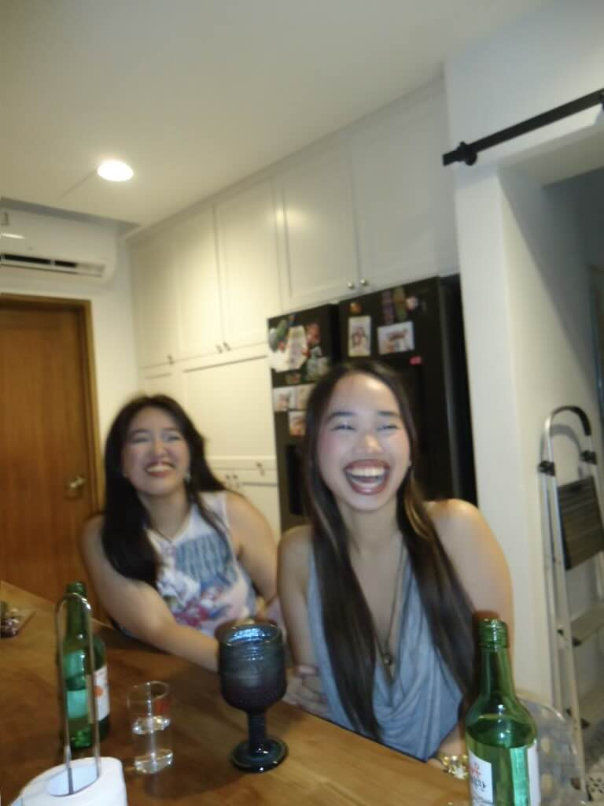(Jea and Stefi's most recent hangout at Stefi's house)
Now that we’re twenty, almost twenty-one, Jea is still one of my closest friends. Our once codependent friendship has evolved into a low-maintenance one, one that consists of bi-yearly visits. I am back for the Summer and today, I find myself sitting beside her in a single bed, in her newly rented, cluttered apartment. She moved 5 minutes away from my home but that matters little, I will be gone in a week. Her sister lies in the bed next to hers, a physical reminder of how she remains bound to the responsibility of taking care of her, even though they are both in college, supposedly grown up.
She imagines a future where she will join me on the East Coast. “Masters, I’ll come” she tells me, clinging to the hope of a future where her dreams are no longer on hold. I want to believe her—to imagine a life where she's finally free to live for herself. But there's a part of me that can't shake the doubt, and I ask, "What about Earl?"
“I’ll bring him with me” she replies without hesitation.
I smile, even though a small ache settles in my chest. “I can’t wait to see you there.”
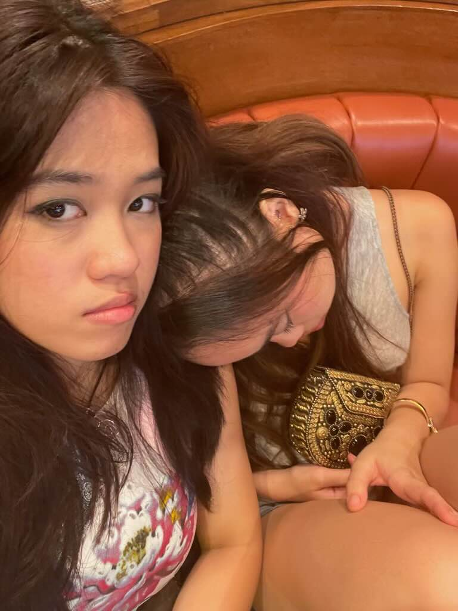(Jea and Stefi after a night out)